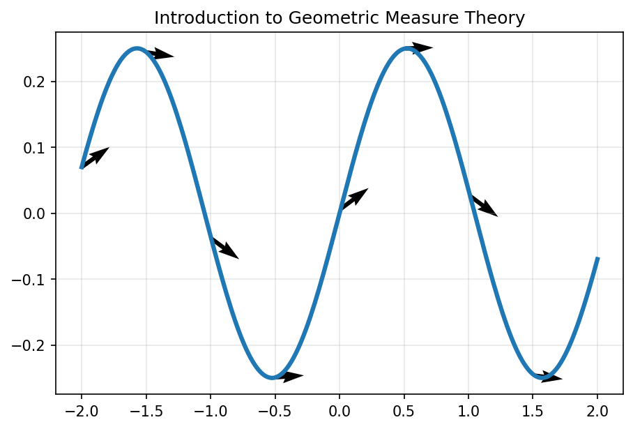

A first lecture on measuring rough geometric objects, keeping orientation and boundary data visible, and reading diagnostics as proof obligations.
A boundary should have no boundary. This identity is a compact sanity check for oriented-chain computations.

The artifact does not prove a theorem. It rehearses the discipline of reading a theorem as an inspectable contract.
Instructor check: when a learner gives a visual explanation, ask which measure is used, where the density lives, which test forms are allowed, and what boundary is fixed.